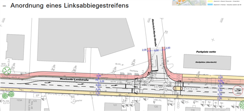
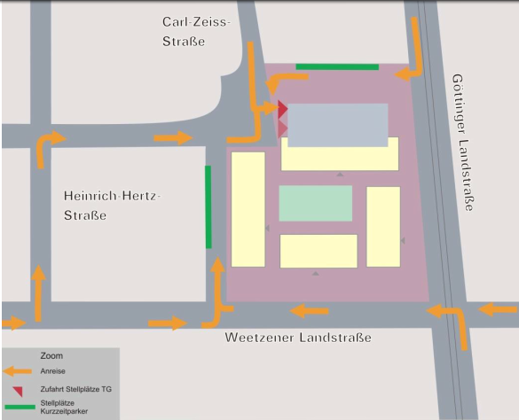

Der ADFC (Allgemeiner Deutscher Fahrrad Club) Hemmingen/Pattensen engagiert sich für gute Fahrradinfrastruktur und ein fahrradfreundliches Klima in Hemmingen und Pattensen. PDF-Broschüre
Sprecher Jens Spille, E-Mail: j.spille@adfc-hannover.de
ADFC Fahrrad-Selbsthilfewerkstatt-Hemmingen
in der Heinrich-Hertz-Straße 23 (Hinterhof), Hemmingen hat immer Dienstags von 17:30 bis 19:00 Uhr geöffnet
Hilfe bei Reparatur, Fahrradausgabe, Spendenannahme
✉ Fahrrad-Selbsthilfewerkstatt-Hemmingen@web.de
oder Mitglied werden
Lasten zu groß? Keine Ausrede Leihen Sie sich kostenlos ein Hannah Lastenrad unter http://www.hannah-lastenrad.de/. Hilfe, Fragen und Wünsche zur Hannah gibt unter hallo@hannah-lastenrad.de
Der ADFC Hemmingen/Pattensen engagiert für gute Fahrradinfrastruktur und ein fahrradfreundliches Klima. Seit 2015 und mit mittlerweile rund 107 Mitgliedern (Stand Jan. 2019) und weiteren Ehrenamtlichen, engagiert sich der ADFC Hemmingen/Pattensen in den beiden Städten für
Diese vier zentralen Themenfelder werden in unser PDF-Broschüre kurz vorgestellt.
- Aktuelles
- Kurzfristige Meldung
- Was wird
- 5 Tagestouren in 2019 geplant.
- Tipps und Nachrichten
- Veränderte Verkehrsführung wegen B3 Neubau
- Mängelkarte für Hemmingen und Pattensen
- Was war
- Datenschutz
- Übertragung von schützenswerten Daten nur Verschlüsselt. So funktioniert es mit meinem öffentliche OpenPGP 0x9AF24CC8B850EFB77F629711906211B8AC607CB1 Schlüssel. j.spille@adfc-hannover.de
- Impressum
Mehr Radverkehr ist die Lösung bei Stau, dicker Luft und Fahrverboten. Steigen mehr Menschen auf das Fahrrad um, ist das gut für alle. Wie das gelingt, zeigt der Allgemeine Deutsche Fahrrad-Club zu seinem 40-jährigen Bestehen mit einer großen, bundesweiten Kampagne. Das Ziel: Mehr Platz fürs Rad - für gute, breite Radwege, sichere Kreuzungen und viel mehr Fahrradparkplätze. Mit Aktionen vor Ort macht der Fahrradclub auf die Platzdebatte im Straßenraum aufmerksam und zeigt, wie dieser Platz fürs Fahrrad, für gute Radwege und für bessere Radfahrbedingungen genutzt werden kann. Weitere Informationen auf mehrplatzfuersrad.de. Hashtag: #MehrPlatzFürsRad.
Die Stadt Hemmingen hat einen 80-seitgen Entwurf zum “Teilräumliches ISEK - Voruntersuchung Arnum Mitte” im Internet bereit gestellt Drucksache 341/2019.
Hier eine von vielen Umbaumaßnahmen die angedacht sind.
Der Entwurf wird vom Do. 14.02 bis Mo. 18.03 im Rathaus Hemmingen ausliegen. Eine öffentliche Informationsveranstaltung ist am Mo. 18.02 ab 19:00 in der Wäldchenschule replant.
Die ADFC Mitglieder haben auf Ihren 23. RadelTreff in diesem Zusammenhang auch über einen Shared Space (deutsch: „gemeinsamer Raum“) diskutiert. Charakteristisch ist dabei die Idee, auf Verkehrszeichen, Signalanlagen und Fahrbahnmarkierungen zu verzichten. Gleichzeitig sollen die Verkehrsteilnehmer vollständig gleichberechtigt werden, wobei die Vorfahrtsregel weiterhin Gültigkeit besitzt. Im Gegensatz zur konventionellen Verkehrsberuhigung soll auch eine Anwendung in Hauptverkehrsstraßen möglich sein. (Wikipedia)
Beispiel: Shared-Space Kreisel in Bohmte (NdS).

Spontane Feierabendradtouren werden bei entsprechenden Wetter (Sommer) in der Regel Mittwochs angeboten. Die ADFC Ortsgruppe hat dafür eine E-Mail Liste angelegt. Wir melden uns wenn es passt. Wer auf dieser Liste möchte, schreibe bitte an j.spille@adfc-hannover.de.
12.5., Sonntag, 10:00 Uhr
Die ca. 51 km lange Strecke beginnt am Rathausplatz in Hemmingen und führt uns durch
Wettbergen, Empelde, an der Kalihalde vorbei zum Benther Berg. Von dort geht es über Velber und Letter zum Stichkanal Hannover-Linden (Abzweig vom Mittellandkanal).
Direkt am Kanal entlang fahren wir, vorbei an Seelze, nach Lohnde. Dort überqueren wir den Mittellandkanal und etwas später die Leine und erreichen den Blauen See, mit der Möglichkeit zum Picknick (bitte Verpflegung mitbringen!). Der Rückweg geht dann durch die Leinewiesen zum Wasserstraßenkreuz, ein imposantes Bauwerk. Danach geht es über Marienwerder mit der gleichnamigen Klosterkirche in den Hinüberschen Garten. Weiter fahren wir durch die Maschwiesen bei Stöcken und kommen wieder an den Stichkanal. An Leine und Ihme entlang, an den Ricklinger Teichen vorbei, fahren wir zurück nach Hemmingen.
Dauer: ca. 5-6 Std., bitte ausreichende Verpflegung mitnehmen! Einkehrmöglichkeiten sind unterwegs vorhanden.
Führung: Dirk Härtel, Günther Kleinod, Helmut Krause, Jochen Lemke, (ADFC Hemmingen/Pattensen)
Treffpunkt: Hemmingen, Am Rathausplatz, rechtzeitig zur Abfahrt um 10.00 Uhr
Anmeldung: Nicht erforderlich, Infos unter 05101-4164
26.05., Sonntag, 10 Uhr
Die ca.50 km lange Strecke führt uns in südlicher Richtung auf guten Wirtschafts-und Fahrradwegen über Jeinsen, Sieger beim Regionswettbewerb “Unser Dorf hat Zukunft“, weiter nach Schulenburg. Dort durchqueren wir den Ort und fahren unterhalb des Marienberges ein Stück auf dem Leine-Heide-Radweg, überqueren die Leine und fahren vor Nordstemmen durch ein kleines Seen-Gebiet nach Wülfingen. Nachdem wir ein kurzes Stück entlang der B3 gefahren sind, biegen wir auf einen asphaltierten Wirtschaftsweg ab und erreichen den Ort Wittenburg. Dort fahren wir steil hinauf zum „Augustiner Kloster Wittenburg“ mit seiner wuchtigen Klosterkirche und einen weiten Blick ins Land. Nun geht es weiter am Rande des Osterwaldes zum sehenswerten „Klostergut Wülfinghausen“, welches wir durchqueren und radeln danach auf einem sehr schönen Weg am Waldrand weiter zum „Cafe Am Waldkater“ mit Einkehrmöglichkeit, man sitzt dort in einem gemütlichen Biergarten mit weiten Blick ins Land. Danach radeln wir am Nordrand des Osterwaldes zum „Forsthaus Fahrensen“ und fahren in den Osterwald hinein zum „Waldrestaurant Holzmühle“. Innerhalb der Wildschweingehege-Mauer, am Rande des „Kleinen Deisters“, radeln wir nach Eldagsen und fahren dann auf der ehemaligen Landstraße weiter nach Mittelrode, wo uns das rustikale „Bauerncafe Mittelrode“ mit Biergarten, zu Kaffee und Kuchen einlädt. Gut gestärkt geht es auf die letzte Etappe unserer Rundtour in nördlicher Richtung nach Bennigsen und von dort aus über die „Calenberger-Ackerwege“ nach Pattensen zurück.
Dauer: ca. 6-7 Std., Verpflegung bitte mitnehmen!
Führung: Helmut Krause, Jochen Lemke, Günter Kleinod, Dirk Härtel (ADFC Hemmingen/Pattensen)
Treffpunkt: Pattensen Neues Rathaus, rechtzeitig zur Abfahrt um 10.00 Uhr
Anmeldung: Nicht erforderlich, weitere Infos unter 05069-7979
23.6., Sonntag, 10.00 Uhr
Die ca. 60 km lange Strecke beginnt am Rathausplatz in Hemmingen und führt uns durch
die Hemminger Wiesen, an den Ricklinger Teichen vorbei zum Maschsee. Von dort geht es, fast immer im Grünen durch die Eilenriede, nach Bischhofshol und Kleefeld zum Pferdeturm.
Weiter geht es am Zoo vorbei, über Vier Grenzen in die List. Hier überqueren wir den Mittellandkanal, und fahren weiter zum Silbersee in Langenhagen. Vorbei an der Pferderennbahn Neue Bult kommen wir nach Isernhagen an den Hufeisensee, mit der Möglichkeit zum Picknick oder Einkehr. Nach einer ausreichenden Pause fahren wir weiter zum Wietzesee, am Golfplatz vorbei, zum Waldkater. Hier kehren wir um und fahren zurück durch die Felder der Isernhagener Bauernschaften zum Altwarmbüchener See. Dort machen wir eine weitere Pause. Anschließend fahren wir weiter durch den Misburger Wald und kommen wieder an den Mittellandkanal. Nach einer kurzen Fahrt am Kanal entlang biegen wir ab, fahren durch eine Kleingartenkolonie, vorbei am Annateich und erreichen den Hermann-Löns-Park mit der Alten Mühle. Zurück geht es wieder vorbei am Maschsee, den Ricklinger Teichen nach Hemmingen.
Dauer: ca. 6-7 Std., bitte ausreichende Verpflegung mitnehmen! Einkehrmöglichkeiten sind unterwegs vorhanden.
Führung: Dirk Härtel, Günther Kleinod, Helmut Krause, Jochen Lemke (ADFC Hemmingen/Pattensen)
Treffpunkt: Hemmingen, Am Rathausplatz, rechtzeitig zur Abfahrt um 10.00 Uhr
Anmeldung: Nicht erforderlich, weitere Infos unter 05101-4164
1.9., Sonntag, 10 Uhr
Die ca. 65 km lange Strecke, führt uns vom „Reiterdorf Koldingen“ nach Ruthe, wo wir das „Landwirtschaftliche Versuchsgut“ sehen, weiter zur Innerstebrücke. Danach verlassen wir die Straße und radeln auf dem Innerste-Radweg weiter zum Bahnhof Sarstedt, den wir unterqueren.
Weiter geht es ein kurzes Stück durch die Altstadt, wieder zum Innerste-Radweg an der sehenswerten „Malzfeldt-Mühle“ vorbei. Wir überqueren ein Wehr, verlassen den Fluss und radeln am „Bruchgraben“ entlang, unterqueren die Bundesstraße und fahren weiter nach Ahrbergen und Giesen. Wir sehen das Naturschutzgebiet „Giesener Berge“, welches nur zu Fuß erkundet werden kann. Weiter geht es auf dem Innerste-Radweg durch das grüne Hildesheim, vorbei am schönen „Hohnsensee“ bis zur „Domäne Marienburg“. Dort gibt es Einkehrmöglichkeit im sehr schön gelegenen „Domänencafé“. Nachdem wir uns gestärkt haben, fahren wir in westlicher Richtung nach Söhre, wo wir ein Stück auf dem „Bahntrassen-Radweg“ fahren und dann weiter zum „Kloster Marienrode“ radeln. Dann geht es hinauf in den Hildesheimer Wald, an den Boschwerken vorbei und durch den Wald bis nach Sorsum. Von dort geht es bergab nach Groß Escherde und weiter nach Heyersum und Rössing, wo wir am „Wasserschloss“ vorbeifahren. Von Rössing fahren wir durch das sehenswerte „Dorf Barnten“. Nun geht es durch die Giftener Seenplatte nach Schliekum und Ruthe. Noch ein paar km, dann sind wir wieder am Ausgangspunkt in Koldingen. Dort schauen wir uns das „Schloss Amtssitz Coldingen“ an.
Dauer: ca. 7-8 Std., ausreichende Verpflegung bitte mitnehmen!
Führung: Helmut Krause, Jochen Lemke, Günter Kleinod, Dirk Härtel (ADFC Hemmingen/Pattensen)
Treffpunkt: Koldingen, Am Lindenplatz, rechtzeitig zur Abfahrt um 10.00 Uhr
Anmeldung: Nicht erforderlich, weitere Infos unter 05069-7979
Tag des offenen Denkmals am 8. Sep. 2019, 9.00 Uhr
Besichtigung der historischen Motormühle anlässlich des Tags des offenen Denkmals Länge: 50 km einfache Strecke. Rückfahrt möglich als geführte Radtour mit weiteren 50 km oder eigenständig per Bahn ab Dolbergen möglich (GVH-Tarif). Bei der Motormühle ist eine Auflademöglichkeit für Pedelecs vorhanden Charakter: Anspruchsvolle Tour über 50 km (einfach) oder 100 km (Hin- und Rückfahrt) bei anspruchsvollem Tempo (2,5 Std. für 50 km sind angesetzt) Strecke: Durch die Eilenriede entlang der Güterbahnumgehung geht es durch Lehrte. Hinter Ramhorst fahren wir über Arpke und Abbensen durch Edemissen zur Motormühle. Nach ausführlichem Genuß von Kaffee und Kuchen kann die Historische Motormühle in Betrieb besichtigt werden. Gemeinsam geht es denselben Weg wieder 50 km zurück, bzw. für Bahnfahrende eigenständig nach Dolbergen. Geeignet nur für sportliche Fahrer (Lademöglichkeit für E-Bikes vorhanden)
Dauer: Einfache Fahrt ca. 2,5 Stunden, insgesamt ca. 8-9 Stunden, bitte ausreichende Verpflegung mitnehmen!
Führung: Dirk Härtel, (0511)-4104749 (mit AB).
Treffpunkt: Hemmingen, Rathausplatz 1, rechtzeitig zur Abfahrt um 9.00 Uhr.
Anmeldung: Nicht erforderlich
Straßenbauverwaltung: Sperrungen und Umleitungen erforderlich. Hier die Offizielle Pressemitteilung.
Zitat: “Anregungen der Stadt Hemmingen, möglichst viele Wegebeziehungen in der Bauzeit von Überführungsbauwerken und Bundesstraßentrasse dauerhaft mittels provisorischer Umfahrungen aufrechtzuerhalten, wurden durch die Straßenbauverwaltung geprüft und angesichts der bisherigen Erfahrungen im Verlauf der Deveser Straße als nicht praktikabel verworfen. Gegen die Einrichtung und Unterhaltung niveaugleicher Querungsmöglichkeiten für öffentliche Verkehre inmitten des Baufeldes sind in erster Linie Sicherheitsbedenken anzuführen.”

Die Pläne (eher gesagt Ideen) zur Umgestaltung der Weetzener Landstraße liegt auf der Homepage der Stadt Hemmingen. Umgestaltung der Weetzener Landstraße.

Die erste Fahrrad-Messstation im Umland ist am Dienstag, den 31.07.2018 durch den Regionspräsidenten Hauke Jagau und Bürgermeister Claus-Dieter Schacht-Gaida in Betrieb genommen worden. Weitere Messstationen sollen in Seelze, Sehnde und Burgwedel folgen.
Ziel: 2025 sollen 21 von 100 Wegen mit dem Rad gefahren werden.
Am 14.06.18 wurde die Analyse der verkehrlichen Auswirkungen vorgestellt.
Auf der Hemminger Homepage können Sie die Präsentation des Vorhabens einsehen.
Hier können Sie die verkehrliche Untersuchung einsehen. Die Erschließung wird von „hinten“ über die Carl-Zeiss-Straße erfolgen.

Die Einwendungen zum Planfeststellungsverfahren für den Neubau eines Radweges im Zuge der K 226/K221 von Ronnenberg nach Devese wurden am 2018-06-27-Mi erörtert. Der ADFC Hemmingen / Pattensen hat auf Mängel für die Einschleifung bei der Querungshilfe in Devese hingewiesen, der neue Entwurf berücksichtigt diese Mängel.
Der Entwurf des Verkehrsentwicklungsplanes 2030 der Stadt Hemmingen lag in der Zeit vom 07.12.2017 bis zum 31.03.2018 öffentlich aus. Er ist immer noch auf der Homepage der Stadt Hemmingen einsehbar Entwurf VEP2030.
Stadt Pattensen und das Wanderbare Calenberger Land
Stadt Hemmingen und das Radvehrkehrskonzept
GPSies bietet die Möglichkeit Touren zu planen und mit anderen auszutauschen. Auch als Apps erhältlich.
Tipp Radtouren: Ausgewählte Radtouren der Nachbar Ortsgruppen sind unter ADFC Region Hannover Termine zu finden.
Tipp Radfahrkarte: Eine Quellen offene Radfahrkarte mit Routingfunktion git es under OpenRouteService.org. Mit der rechten Maustaste kann man Start- und Zielpunkt setzen.
Ältere Tipps und Nachrichten gibt es unter Ältere Nachrichten
Gefährliche Querungen, Unfallschwerpunkte und Mängel auf Rad- und Fußwegen sammeln wir auf unserer neuen Mängelkarte.

siehe Mängelkarte für Hemmingen und Pattensen
Am Mittwoch, den 27. Februar 2019 startete um 18.30 Uhr unser 24. RadelTreff im Calenberger Hof, Göttinger Str. 26 in 30982 Pattensen. Es wurde viel diskutiert, u.a. über die geplante Abstellanlage am Lidl-Parkplatz in Pattensen und um den ISEC Entwurf für Arnum.
ADFC Mitglieder und Interessierte haben sich am 23. Januar 2019 im Clubheim SC Hemmingen getroffen um die Aktivitäten für das Jahr 2019 zu planen. Zum Entwurf ISEK/VU Arnum-Mitte wird der ADFC rechtzeitig eine Stellungnahme abgeben. Weiterhin wollen wir nochmal einen Schulradwegeplan für Pattensen starten. Zum Abbiegeassistent für LKW gab es eine lebhafte Diskussion. Wir möchten die Diskussion erweitern und versachlichen, dazu gehört es auch die Ampelprofile zu ändern und die Trennung der Grünphasen. Der nächste RadelTreff wird vermutlich Ende Februar im Calenberger Hof in Pattensen stattfinden.
Die Stadt Hemmingen ist der Arbeitsgemeinschaft Fahrradfreundlicher Kommunen Niedersachsen / Bremen e. V. (AGFK) beigetreten. Die AGFK bietet den Kommunen ein Netzwerk, um sich gegenseitig auszutauschen und zu unterstützen. Ziel ist die Zertifizierung „Fahrradfreundliche Kommune Niedersachsen“. Zu den Aufgaben gehört es u.a.:

Die Stadt Hemmingen hat ihre Errungenschaften und Ziele auf Seite 15 der Broschüre 2018 als PDF (Download) dargelegt.
Am Dienstag, den 18. Dezember 2018 überreichte eine Delegation der Hemminger Grünen einen symbolischen Spendenscheck über 350 € an das Team der Fahrrad-Selbsthilfewerkstatt vom ADFC.
Das Geld hatten die Grünen beim Hemminger Weihnachtsmarkt am vergangenen dritten Adventswochenende eingesammelt. Dort hatten sie an ihrem Stand wie jedes Jahr selbstgemachte Kekse, Marmeladen, Honig und anderes mehr angeboten und dafür um Spenden für einen guten Zweck gebeten, dieses Mal für die Arbeit der Fahrrad-Selbsthilfe-Werkstatt.
“Wir haben großen Respekt vor der Arbeit der Ehrenamtlichen des ADFC, die die Werkstatt auf dem Gelände der Flüchtlingsunterkunft in der Heinrich-Hertz-Straße nun schon seit über zwei Jahren mit viel Enthusiasmus und sehr professionell betreiben” erklärt Joachim Steinmetz, Vorsitzender des Grünen Ortsverbandes.“Diese Initiative fördert die Integration der Geflüchteten genauso wie den umweltfreundlichen Radverkehr. Alte Fahrräder und Ersatzteile werden weiterverwendet, und auch Mitbürger mit schmalem Geldbeutel können sich Räder und Reparaturen leisten. Solch eine soziale und nachhaltige Initiative würden wir uns noch viel häufiger wünschen!”
“Wir werden das Geld nun für dringend benötigte Aufwertungen der Räder einsetzen, wie zum Beispiel für gute LED-Fahrradbeleuchtungen, die sind unverzichtbar für die Verkehrssicherheit von Radlern in der dunklen Jahreszeit” freuten sich die Mitarbeiter der Fahrradwerkstatt. Die aktuell etwa 15 Ehrenamtlichen - Heminger Einwohner und Geflüchtete - wollen dazu gleich im Januar eine Umrüstaktion starten. “Wir freuen uns auch immer über weitere Mitmacherinnen und Mitmacher, denn Arbeit ist genug da und der Bedarf auch”.
“Über das Engagement in der Fahrradwerkstatt hinaus ist der ADFC ist in Hemmingen mittlerweile ein wichtiger Akteur in verkehrspolitischen Belangen geworden”, so Steinmetz weiter. So habe der ADFC in jüngster Zeit beispielsweise beim Verkehrsentwicklungskonzept oder bei Planungen zum Straßenumbau an der Hohen Bünte wichtige Anregungen gegeben. ADFC und Grüne vereinbarten, sich auch 2019 weiter zu Schwachstellen und Perspektiven des Radverkehrs auszutauschen, um die Verkehrswende auch in Hemmingen voranzubringen.
Auch wenn zwei Wochen ohne kaum auszuhalten sind, gönnt sich das Team der ADFC Fahrrad-Selbsthilfe-Werkstatt eine kurze Auszeit. Am 18.12. werden die letzten Fahrräder an Geflüchtete und Bedürftige ausgegeben und die letzten Kundenreparaturen begleitet. Die Werkstatt wird gefegt und aufgeräumt. Am Dienstag, 8. Januar 2019, 17.30 geht es mit neuer Energie an den Start. Das ehrenamtliche Team bedankt sich bei allen Fahrrad-, Material- und Geldspendern aus Hemmingen, Pattensen und “umzu”. Die großzügige Überlassung alter oder ausgemusterter Räder erleichtert sehr vielen Menschen den Weg zur Arbeit oder zu Sprachkursen und ermöglicht die alltäglichen Transporte. Auch weiterhin freuen wir uns über Spendenfahrräder. Weihnachten ist ja immer eine gute Tauschgelegenheit, bringen Sie Ihr Altes gerne vorbei! In der Werkstatt gab es im Jahresverlauf viele nette Gespräche und Begegnungen zwischen Hemminger Bürgern und Geflüchteten, die auch in der Werkstatt mithelfen. Hunderte Reparaturprojekte konnten gemeinsam abgeschlossen werden: Reifen wurden geflickt, Beleuchtung repariert, Bremsen neu justiert oder Räder neu eingespeicht.
Das soll auch 2019 weitergehen. Die Werkstatt sucht dazu auch weitere Ehrenamtliche, die mit sozialer Kompetenz die Fahrradausgabe an Bedürftige managen oder technisch versiert gerne in der Werkstatt mit schrauben möchten. Kommen Sie einfach an einem Dienstag zu den Öffnungszeiten 17.30 bis 19.00 Uhr in der Heinrich-Hertz-Straße 23 vorbei
Am 27. Nov. 2018 schrieb die Presse, das die neue Höchstgeschwindigkeit auf der K225 zwischen Devese und Ohlendorf 50 km/h beträgt. Der Grund dafür ist der Wegfall von Radwegverbindungen durch den Bau der Ortsumgehung. Die Gefahr für Radfahrende, die gezwungen sind diese Ausweichstrecke zu benutzen, war bei bis zu Tempo 100 einfach zu groß.
Mehr aus der Vergangenheit
Die ADFC Geschäftsstelle:
ADFC Allgemeiner Deutscher Fahrrad-Club / Region Hannover e.V.
Geschäftsstelle
Hausmannstr. 9-10
30159 Hannover
Tel.: (0511) 16403-12
Das Sprecherteam wurde auf der Jahreshauptversammlung 2018 am 24. Januar 2018 für zwei Jahre gewählt.
| Aufgabe | Vertreter |
|---|---|
| Sprecher | Jens Spille |
| Vertreter (Fahrrad Selbsthilfe Werkstatt) | Dirk Härtel |
| Vertreter (Touren) | Günther Kleinod |
| Vertreter (Pattensen) | Ralf Schmalkuche |
Mitglied werden kann man hier
IBAN: DE97 2509 0500 0000 9205 50,
BIC: GENODEF1S09 (Sparda Bank Hannover e.G.)
Verwendungszweck: “ADFC Selbsthilfewerkstatt Hemmingen” und Anschrift (für eine Spendenbescheinigung)
Mit fahrradfreundlichen Grüßen, die ADFC Ortsgruppe Hemmingen/Pattensen.